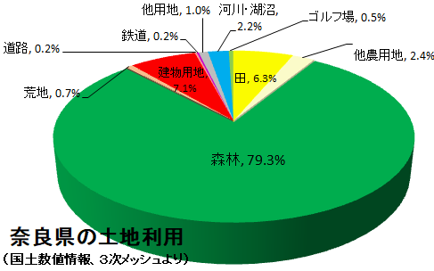

奈良県の土地利用について、国土交通省が提供している「国土数値情報」を用いて現状の見える化を行った。ここでは、平成26年度版の「土地利用細分メッシュデータ」より、田、その他農用地、森林、荒地、建物用地等の利用区分を100mメッシュ毎に色分けして、市町村別に切り出しマップ上に示した。
同じく「国土数値情報」から奈良県の土地利用種別３次メッシュ（1kmメッシュ）データを地理院地図上に落とし込みました。
| 種 別 | 色 | 定 義 |
| 田 | 湿田・乾田・沼田・蓮田及び田 | |
| その他農用地 | 麦・陸稲・野菜・草地・芝地・りんご・梨・桃・ブドウ・茶・桐・はぜ・こうぞ・しゅろ等を栽培する土地 | |
| 森林 | 多年生植物の密生している地域 | |
| 荒地 | しの地・荒地・がけ・岩・万年雪・湿地・採鉱地等で旧土地利用データが荒地であるところ | |
| 建物用地 | 住宅地・市街地等で建物が密集しているところ | |
| 道路 | 道路などで、面的に捉えられるもの | |
| 鉄道 | 鉄道・操車場などで、面的にとらえられるもの | |
| その他用地 | 運動競技場、空港、競馬場・野球場・学校港湾地区・人工造成地の空地等 | |
| 河川及び湖沼 | 人工湖・自然湖・池・養魚場等で平水時に常に水を湛えているところ及び河川・河川区域の河川敷 | |
| ゴルフ場 | ゴルフ場のゴルフコースの集まっている部分のフェアウエイ及びラフの外側と森林の境目を境界 |
 左の円グラフは国土数値情報1) のデータより作成したものですが、奈良県は、2,847 km2の森林面積で、おおよそ8割が森林ということになります。
奈良県民は一人当たりどのくらいの二酸化炭素を排出しているのでしょうか？
奈良県における2015年度の二酸化炭素排出量は686万トン2) で、人口1,364,316人（2015年国勢調査）で割ると、一人当たりの年間排出量は約5.0トンということになります。
一方、森林は温室効果ガスである二酸化炭素をどれくらい吸収するのでしょうか？森林総合研究所の「日本の森林炭素吸収量とその分布」3) では、森林ヘクタール当たりの炭素吸収量は0.86Ct/ha/yrという数字があり、これを用いて奈良県域の森林から二酸化炭素吸収量を算出してみます。
（二酸化炭素吸収量）＝284,700（森林面積[ha]）×0.86×44/12（二酸化炭素換算）=897,754 CO2t/yr
となり、奈良県域の森林で年間二酸化炭素吸収量は約90万トンと見積もられます。
大阪府の状況4)と比較してみますと、一人当たり二酸化炭素の年間排出量（2015年）は大阪府で約5.8トン、奈良県で5.0トン、
一方、森林による吸収量（2015年）は大阪府で約25万トン、奈良県で約90万トンと推定されます。
奈良県は大阪府に比べ、一人当たり排出量では0.86倍と少なく、森林吸収量では、3.6倍と見積もられます。
このように、土地利用の可視化により地域の状況を知り、森林の二酸化炭素吸収解析などに活用出来ればと考えます。
1) http://nlftp.mlit.go.jp/ksj/
2) http://www.eco.pref.nara.jp/files/ghg2015.pdf
3) https://www.ffpri.affrc.go.jp/pubs/seikasenshu/2001/18matsumoto.html
4) http://xd539779.html.xdomain.jp/gis/landuse/landuse_map/landuse_1km_mesh.html